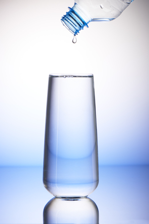

Quantos Litros de Água Você Deve Beber por Dia?
Manter-se hidratado é uma das práticas mais simples — e mais negligenciadas — para uma vida saudável. A Calculadora de Água Ideal do NutriCalc ajuda você a descobrir a quantidade ideal de ingestão de água com base no seu peso.
💧 Por que a hidratação é tão importante?
- Transporta nutrientes e oxigênio pelas células.
- Regula a temperatura corporal.
- Melhora o funcionamento do intestino.
- Contribui com o bom desempenho mental e físico.
📐 Como a calculadora funciona?
Utilizamos a fórmula clássica da nutrição:
35 ml x peso corporal (kg)
Ou seja, uma pessoa com 70 kg deve consumir cerca de 2.450 ml de água por dia (ou 2,45 litros).
📌 Como usar a ferramenta?
Você só precisa inserir seu peso corporal atual. A calculadora faz o cálculo automático e informa a meta diária recomendada de ingestão hídrica.
💡 Dicas para beber mais água no dia a dia
- Ande sempre com uma garrafinha.
- Use alarmes para lembrar de beber água.
- Adicione rodelas de limão ou hortelã para saborizar naturalmente.
✅ Conclusão
A água é essencial para o funcionamento ideal do corpo. Com a Calculadora de Água do NutriCalc, você pode estabelecer uma meta personalizada de hidratação e melhorar sua saúde de forma simples e natural.